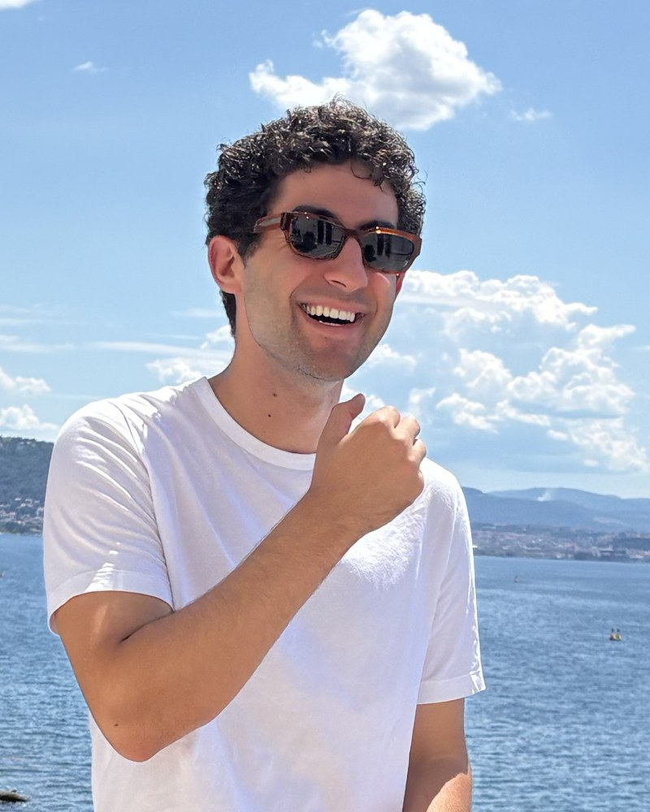
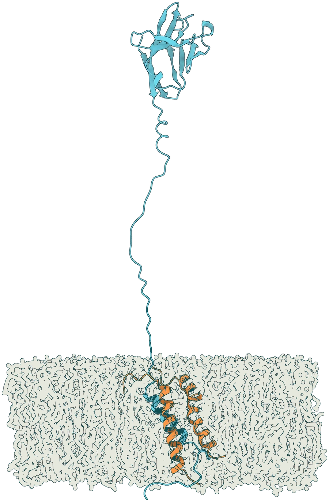
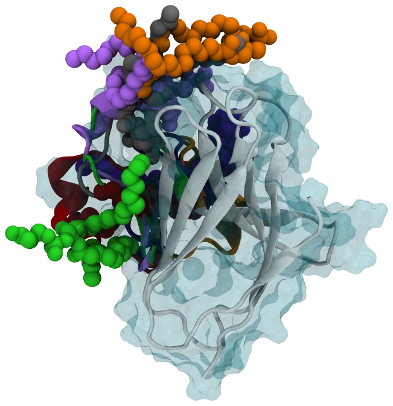

2026
Review
Review
Uncovering the Biological Mechanisms of TREM2 with Molecular Simulations: A Comprehensive Review and Perspective
Progress in Biophysics and Molecular Biology DOI ↗

Chemical Engineering PhD Student · CU Boulder · Caltech
molecular simulation, alzheimer's disease, and enzyme design
I'm a PhD student in Chemical Engineering at the University of Colorado Boulder, advised by Prof. Kayla Sprenger, and an NSF Graduate Research Fellow. Since February 2026 I've also been a visiting student researcher in the lab of Prof. Frances Arnold at Caltech.
My current work asks how protein motion shapes protein function. Using molecular dynamics, enhanced sampling, and machine-learned models of protein structure and dynamics, I study how conformational ensembles govern signaling and lipid recognition in neurodegenerative disease, and how those same ensembles can be exploited to engineer better enzymes. Ultimately, I'm interested in integrating physics-based modeling, mathematical and machine learning approaches, and high-throughput experiments to understand complex systems and engineer better solutions.
I completed my B.S. and M.S. in Chemical and Biological Engineering (with a minor in music) at CU Boulder (sko buffs). I am always eager to talk science or collaborate, so reach out!


Progress in Biophysics and Molecular Biology DOI ↗
ChemRxiv · *Equal contribution DOI ↗
Alzheimer's & Dementia · *Co-corresponding DOI ↗
eLife DOI ↗
I've mentored several outstanding undergraduate researchers as they prepared for graduate school, and I served as an Advanced Teaching Assistant for Gen Chem at CU Boulder, helping coordinate, teach recitation for, and lecture a 400+ student course.
Outside of research, I minored in music as an undergrad and have recently picked the violin back up. I eventually want to find the time to attend culinary school in France.